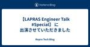
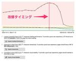

Repro Tech Blog
https://tech.repro.io/
Repro Tech Blog
フィード

【LAPRAS Engineer Talk #Special】 に出演させていただきました 6
6
Repro Tech Blog
こんにちは、Repro Booster のプロダクトマネージャーの Edward Fox です。 先日LAPRASさんの主催する【LAPRAS Engineer Talk】に出演させていただき、その動画が公開されたのでお知らせです。 LAPRAS CTOの興梠さんからのキラーパスがテンポよく繋がり話が非常に盛り上がったため、全体で50分ほどの尺になり、動画は前後編に分かれていますｗ 前編では Repro Core Unit の 村上より、Reproの大規模なトラフィックを支えるデータ処理基盤について説明しています。 【前編】事業を支えるサービス基盤のアーキテクチャと今後の挑戦 前編の推しポイン…
10時間前

パフォーマンスを改善する技術 112
Repro Tech Blog
はじめに こんにちは。Repro Booster プロダクトマネージャーの Edward Fox です。普段はRepro Boosterの製品戦略立案やロードマップの策定を担当していますが、プロダクトの提供とは別にお客様サイトの根本課題を一緒に解決する取り組みも行っています。本記事では、最近担当した大規模ECサイトのパフォーマンス改善事例を題材に、技術面と組織面の両方から「パフォーマンス改善をどう進めればよいか」という観点で記事を書いてみました。 Repro Booster と伴走支援の位置付け Repro Booster は「タグを設置するだけでWebパフォーマンスを改善する」ことを目的にし…
13日前
View Transition APIについて調べてみた 18
Repro Tech Blog
Repro Boosterの開発を担当しているRyoma Shindo です。 今回はView Transition APIについて、基本的な使い方やCore Web Vitalsへの影響の有無など調査したのでご紹介します。 View Transition API とは View Transition APIは、ページ遷移する際のアニメーションを手軽に実装するためのAPIです。MPA（Multi Page Application）/SPA(Single Page Application)どちらでも利用できますが、MPAで利用する場合、MPAでありながらSPAのようなスムーズな画面遷移を実現でき…
14日前

新入社員のDevinと過ごす日々
Repro Tech Blog
皆様こんにちは。Boosterの杉浦です。 Repro ではここのところ、各種 AI を活用して生産性を上げられないか、色々模索しているところです。 Devin も複数のチームで実験的に導入をはじめ、現状3か月ほどになりました。 Booster チームでは主に既存レポジトリのコードの改善、機能追加の目的で試しており、以下のような感触です。 人間のジュニアプログラマと比較して十分役に立ち、高速かつ大量に作業を行える プレーンテキストのドキュメントやリソースがすでにあるかが非常に重要 開発 - ビルド - テストのパイプラインが手元の VM/Docker ですべて完結するように整備されていると、作…
14日前
EmbulkからMySQLに日本語のデータを挿入するときの落とし穴
Repro Tech Blog
こんにちは。Feature2 Unitのうなすけです。我々のチームの担当範囲のひとつには「データの入出力」というものがあり、お客様からAPI呼び出しやファイルアップロードなどで受け取ったデータを適切に処理するコンポーネントの運用・開発をしています。 我々の担当している機能のひとつに、お客様からアップロードしていただいたCSVファイルの内容をデータベースにインポートするというものがあります。これは裏側ではEmbulkを使ってMySQL(Aurora)に投入するということを行っています。 このとき、アップロードされるCSVの内容に日本語(マルチバイト文字列)を含められるように機能追加しようとしたと…
1ヶ月前
Repro における AWS アカウント分離の取り組み
Repro Tech Blog
Development Division/Platform Team/Sys-Infra Unit では、よりセキュアな状態を維持できるように様々なことに取り組んでいます。 背景 Repro ではメインとなる AWS アカウントに以下の環境で利用するリソースを全て作成していました。1 production 所謂本番環境 staging 本番リリース前に QA を行うための環境 dev_staging 開発者の動作確認用 test アプリケーションの CI で利用する internal 内部利用のためのウェブアプリケーション AWS Well-Architected Tool を使って既存環境を…
1ヶ月前
開発者の作業効率を向上させるためのデプロイプロセス改善
Repro Tech Blog
Development Division/Platform Team/Sys-Infra Unit では、開発者がスムーズに開発作業をできるように様々なことに取り組んでいます。 今回はそのうちの1つを紹介します。 背景 Repro の Slack には、開発オペレーション用のチャンネルがあります。このチャンネルには@deploy-botが存在しています。前回の改善1で@deploy-botは使いやすくなったのですが、Development Division 全体ではあまり活用されていませんでした。 新規アプリケーションのデプロイ準備時に Sys-Infra Unit への作業依頼が多かったため…
3ヶ月前
103 Early Hints とは何か？ ～マイナーだけど革新的なHTTPステータスの世界～
Repro Tech Blog
はじめに みなさまこんには。日々 Booster で楽しくコードを書いている杉浦(sugi) です。 Booster プロジェクトではタグを入れるだけでサイトを高速化できる「Repro Booster」という製品を作っていますが、そのためにも日々さまざまな最適化手法を調査・模索しています。 その中で個人的に期待しているのが、 103 Early Hints というHTTPステータスコードです。 この記事では Repro Tech Meetup #9 で行った発表(資料)を元に、103 Early Hintsはどのような仕組みなのか、なぜ高速化につながるのか、さらに現状の実装に関して解説します。…
4ヶ月前
ServiceWorkerの課題を解決する!? Static Routing APIを使ってみた
Repro Tech Blog
はじめに こんにちは、Repro Booster という製品の開発責任者／プロダクトマネジメントを担当しているEdward Fox（@edwardkenfox）です。 今回は、ServiceWorkerに組み込まれた新機能「Static Routing API」を実際に試してみた件について説明します。Repro Boosterでの応用を通じて得た知見を共有できればと思います。 Repro Boosterとは Repro Boosterは、私たちが提供しているパフォーマンス最適化ソリューションです。サイトにタグを設置するだけで、読み込み速度が向上するというシンプルなコンセプトで設計されています。…
4ヶ月前
Reproで技術書の読書会を続けるために行っていること
Repro Tech Blog
Repro Team / Feature Unit の下村です。 Reproで行っている技術書の読書会をどのように運営しているのかについて紹介します。 Reproの技術書読書会の現状 現状は2週間に1回のペースで1時間ほど時間をつかって読書会を行っています。参加者はその時々によって変わりますが、2-5人程度が参加しています。 今までは以下のような本を読んできました。 システム設計の面接試験 (半年程度で読破) ソフトウェア設計のトレードオフと誤り (半年程度で読破) 分散システムデザインパターン (現在読んでいるところ) Reproでは高トラフィックなシステムの保守運用や開発が求められる場面が…
4ヶ月前
Repro Tech Meetup #9 – Webパフォーマンス を開催しました
Repro Tech Blog
こんにちは、Repro Booster開発責任者のEdward Fox（edwardkenfox）です。12月13日に開催された Repro Tech Meetup #9 のイベントレポートをお届けします。 今年の3月には「Deep Dive into Browsers」というテーマで開催した Repro Tech Meetup ですが、今回はもう少しテーマを広げ「Webパフォーマンス」という括りにしてみました。テーマの裾野が広くなったことも手伝ってか、前回のイベントと比較すると参加者が倍近くまで増え、約30名の皆さんにご参加いただきました。規模が拡大した一方で、熱量の高い発表や質疑応答が次々…
5ヶ月前
AWS Lambda RuntimeをRuby3.3にしたら外部エンコーディングが変化した話
Repro Tech Blog
こんにちは。Feature2 Unitのうなすけです。我々のチームの担当範囲のひとつには「データの入出力」というものがあり、お客様からAPI呼び出しやファイルアップロードなどで受け取ったデータを適切に処理するコンポーネントの運用・開発をしています。 AWS Lambdaの処理が失敗するようになった 皆さん、AWS Lambdaはお使いでしょうか。我々も様々な処理にAWS Lambdaを活用しています。一例として、ユーザーからアップロードされたCSVファイルのバリデーションを行うLambda functionをAWS Step Functionsの一部として実行しています。 ある日、機能追加とし…
5ヶ月前
Apache HudiのMerge on Readテーブルのパフォーマンス特性とチューニングについて
Repro Tech Blog
Reproでチーフアーキテクトをやっているjoker1007です。 前回、Apache Hudiというテーブルフォーマットについて紹介する記事を書きましたが、今回はHudiを実際に本番に近いデータで検証し、パフォーマンス特性とチューニングについていくつか知見を得たので、その辺りについて紹介します。 また、同じ内容をベースにOTFSG Tokyo Meetup #4というイベントで発表させていただきました。 これぐらいの規模でHudiについてガッツリ検証している例は国内では余り見ない様なので、それなりに貴重な知見を共有できたかなと思います。 ブログ記事とほぼ同じ内容ですが、スライドになってる資料…
7ヶ月前
Repro で遭遇した Aurora MySQL にまつわるトラブル 5 選
Repro Tech Blog
こんにちは、Platform Team の荒引 (@a_bicky) です。前回は続・何でも屋になっている SRE 的なチームから責務を分離するまでの道のり 〜新設チームでオンコール体制を構築するまで〜という話を書いたんですが、今回は Repro の運用に 7 年以上携わる中で私が遭遇して印象的だった Aurora MySQL 絡みのトラブルについて紹介します。 Aurora MySQL が詰まってデータ処理のスループットが下がるとか、API のレスポンスが遅くなるとか、ALTER TABLE する度にアプリケーションエラーが発生するとか、胃が痛くなる胸が熱くなる話が多いので、Aurora M…
7ヶ月前
pt-online-schema-changeにnohupをつけてバックグラウンドで実行してもSIGHUPを受け取って終了する現象
Repro Tech Blog
Platform Team/Sys-Infra Unitの伊豆です。今回は、pt-online-schema-changeにnohupをつけてバックグラウンドで実行してもSIGHUPを受け取って終了する現象に遭遇したので、そのときに調査した内容を共有します。 調査は以下の環境で行いました。 pt-online-schema-change v3.6.0 Amazon Linux 2023 bash 5.2.15 OpenSSH 8.7p1 背景 ReproではAurora MySQLを使っていて、レコード数の多いテーブルのスキーマを変更するときに、pt-online-schema-changeを…
7ヶ月前
Kafka Streams はレコードをどのように処理しているのか
Repro Tech Blog
Platform Team/Repro Core Unit の村上です。 Repro では Kafka を基盤としたストリーム処理のアプリケーションを構築する際に、Kafka Streams を積極的に活用しています。 Kafka Streams は、フォールトトレラントなステートフル処理を簡潔に実装でき、データパイプラインを Topology という表現で抽象化することで、複雑な処理でも管理しやすい形で組み立てていくことが可能です。 また、Apache Kafka 以外の外部依存がないことや Streams DSL によるシンプルな記述でストリーム処理を実装できることなども、ストリーム処理の…
7ヶ月前
TerraformのCIをAtlantisに移行しました
Repro Tech Blog
Repro では AWS 等のリソース管理に Terraform を活用しています。 この度 Terraform で管理しているコードの CI を Atlantis に移行したので、その経緯などについて書きます。 背景 Repro では以下のリソースを Terraform を使ってコード化して GitHub で管理しています。 AWS で構築したインフラ DataDog のモニターやアラート Google Cloud Platform で利用している一部のリソース GitHub の reproio organization のメンバーやチーム Kafka Topic MySQL アカウント P…
8ヶ月前
共通認識を作ろう！ユーザーストーリーマッピングのすすめ
Repro Tech Blog
Reproのデザイナーが、機能開発において要件・フェーズを決めるのに活用できるユーザーストーリーマッピングというワークショップ手法をご紹介します。
9ヶ月前
Go で実 DB を使ったテストをしてみた
Repro Tech Blog
はじめに こんにちは。Repro で新規事業の開発をしている冨永です。 我々のチームでは主に、ユーザーのイベント集計を定期的にバッチ処理するフローで Go を採用しています。 Go で RDB など外部依存のあるコンポーネントを扱うテストをする際 interface などで抽象化しモックすることが多かったのですが、実際にその部分の挙動が確かめられないという不安がありました。 そこで今回は testfixtures というライブラリを使って実際に DB アクセスするテストを書いてみたのでその紹介です。 きっかけ まずはチーム内でテストに関する共通認識を作るためワークショップを実施しました。 各々…
9ヶ月前
デザイナーが中期製品戦略を立てて全社員に未来を見据えたアクションをしてもらうまで
Repro Tech Blog
こんにちは、Reproのデザイナーの河西です。今日は、以前取り組んだ「中期製品戦略の策定」について話したいと思います。 ちょうど1年前のある日、中期経営計画の改定にともなって、中期製品戦略の策定のためのプロジェクトが立ち上がり、策定のためのメンバーの募集がありました。 デザイナーとしてもっと幅を広げたい、会社のみんなにもっとプロダクトにフォーカスしてほしい、売上を伸ばしたい...そんな思いから、策定メンバーに立候補しました。 Reproでいう中期製品戦略とは 戦略的な目標とそれに必要なプロダクト上の戦術を含む、約3年分の開発マイルストーンです。（以下 製品戦略と表記）世間的にはこれら戦略まで含…
10ヶ月前
作った機能をお客様に使ってもらうために必要なのは結局組織間連携の強化だった
Repro Tech Blog
こんにちは。ReproのProduct Planning Teamでプロダクト企画を担当している正木です。 今回は前回の記事の続きで、なぜGoToMarketの改善活動の効果がなかったのかの原因と、そこへの対策についてお話をしていきます。 tech.repro.io 結論から先に言うと、機能提供から利用開始されるまでのリードタイムが減り、活用度も上がるという結果になりました！ GoToMarket改善活動はなぜ効果がなかったのか？ 大きく2つの理由がありました。 プロジェクト型組織構造によるナレッジの局所化 当時のReproの開発組織はプロジェクト制を取っており、何かの開発が決定すると都度プロ…
10ヶ月前
更新可能なデータレイクを構築するテーブルフォーマットApache Hudiについて
Repro Tech Blog
Reproでチーフアーキテクトを担当しているjoker1007です。 今回、社内のデータストレージの将来的な選択肢の一つとしてApache Hudiというテーブルデータフォーマットについて調査と実データでの検証を実施しました。 この記事では2回に分けて、そもそもhudiってどんなフォーマットなのか、どういうデータで検証してどんな結果が得られたのかについて紹介します。 ということで第1回は、hudiそのものについての紹介をしていきます。 この記事はhudi-0.14.1を利用して検証した時のものです。また社内向けに書いた資料の手直しであるため丁寧語でないことに御留意ください。 Hudiとは何か、…
10ヶ月前
作った機能をお客様に使ってもらうためのGoToMarket活動を改善した話
Repro Tech Blog
こんにちは。ReproのProduct Planning Teamでプロダクト企画を担当している正木です。 Product Planning Teamって何？という方はこちらの記事を併せて見ていただけると嬉しいです！ tech.repro.io さて、プロダクト開発に関わっている皆さんであれば「我々の作った機能は果たしてちゃんと使われているんだろうか…」と思ったことは一度はあるはずです。 今回はリリースした機能をお客様に使ってもらうための試行錯誤について2回にわたってお話しようと思います。 ReproにおけるGoToMarketとは？ Reproにおいてはリリースされた機能をお客様に使ってもら…
10ヶ月前
Google Cloud の CDC サービスを活用した請求フローの構築
Repro Tech Blog
はじめに こんにちは。新規事業のプロダクトマネジメントを担当している taison です。 先日、顧客への請求金額を算出するために日々実行しているデータフローを刷新しました。 その際に Datastream という Google Cloud が提供する CDC サービスを活用したことで、構築・運用が楽になったのでご紹介します。 なお今回は開発にご協力いただいている 株式会社 Rabee の abyssparanoia さんの提案・検証があって実現したので、ここで感謝させていただきます。 全体像 それまではとある BI ツールを活用して、請求根拠となるデータを各内容にあわせて出力するデータフロー…
10ヶ月前
プロダクトへのフィードバックループを回すための取り組み
Repro Tech Blog
こんにちは。ReproのProduct Planning Teamでプロダクト企画を担当している正木です。 Product Planning Teamって何？という方はこちらの記事を併せて見ていただけると嬉しいです！ tech.repro.io 今回はプロダクトや作っている途中の機能に対して、全社からのフィードバックを得るために行っているプロダクトフィードバック会（通称プロフィ会）の運用と改善についてのお話です。 プロダクトフィードバック会とは？ 毎週木曜11:00-12:00で全社員を対象に開発チームがプロダクトに関する発表やプレゼンを行い、フィードバックを得る会です。この会は、プロダクトに…
10ヶ月前
Amazon EMR のバージョンアップ 3/3：Presto から Trino への移行
Repro Tech Blog
前回の続きです。 EMR 5.36.1 から EMR 6.15.0 への更新 使用するアプリケーションのバージョンは以下のようになりました。OS は Amazon Linux 2 です。 アプリケーション等 EMR 5.36.1 EMR 6.15.0 Tez 0.9.2 0.10.2 Hue 4.10.0 4.11.0 Hive 2.3.9 3.1.3 Hadoop 2.10.1 3.3.6 Presto 0.267 0.2831 Trino N/A 426 Hive, Hadoop, Tez については前の記事で確認済みなので、ここからはそれ以外の要素について検討していきます。 一番問題にな…
1年前
Amazon EMR のバージョンアップ 2/3：メジャーバージョンアップで遭遇した問題
Repro Tech Blog
前回の続きです。 EMR 5.36.1 から EMR 6.6.0 への更新について書きます。 EMR 5.36.1 から EMR 6.6.0 への更新 アプリケーション等 EMR 5.36.1 EMR 6.6.0 Tez 0.9.2 0.9.2 Hue 4.10.0 4.10.0 Hive 2.3.9 3.1.2 Hadoop 2.10.1 3.2.1 Presto 0.267 0.267 Trino N/A 367 Amazon Linux 2 2 このバージョンアップでは Hive と Hadoop のメジャーバージョンアップがあるので、Upgrade Amazon EMR Hive Me…
1年前
Amazon EMR のバージョンアップ 1/3：メジャーバージョンアップの前にやったこと
Repro Tech Blog
Development Division/Platform Team/Sys-Infra Unit で実施した Amazon EMR 1 のバージョンアップについてどのようなことをやったのか紹介します。 Repro では Presto や Hive などのセットアップに EMR を使用しており、以下の用途で活用しています。 プッシュ通知の配信対象を抽出する 管理画面で参照するデータを抽出する S3 などに貯まっているイベントデータを集計する EMR のアプリケーションとしては以下を使用していました。 Presto Tez Hadoop Hive Hue 経緯 Repro では多くのミドルウェア…
1年前
@hono/zod-openapiで型安全なAPI開発
Repro Tech Blog
はじめに こんにちは、Reproで新規事業の開発を行っているエンジニアの兼信です。 今回は @hono/zod-openapi を採用して型安全なAPI開発を行なっている事例をご紹介します。 導入の経緯 私たちが提供する「Repro」は、デジタル領域のマーケターに対し、エンドユーザーとの付加価値の高いコミュニケーション手段を提供するためのSaaSプロダクトです。一方でそのコミュニケーションを次のステージに導くための新規事業も準備しており、そのために新しいプロダクトの開発も行っています。 すでにRepro という規模が大きくなっているプロダクト・ソリューションをもっているため、最初から一定の規模…
1年前
Repro Tech Meetup #8 – Deep Dive into Browsers を開催しました
Repro Tech Blog
Repro Tech Meetup #8 – Deep Dive into Browsers こんにちは、Repro Booster開発責任者のEdward Fox（edwardkenfox）です。 3/15（金）に「Repro Tech Meetup #8 – Deep Dive into Browsers」という勉強会を開催しました。私たちがRepro Boosterの開発と運用を行っている中で、ブラウザの仕様や細かい挙動に関する知見が少しづつ溜まっており、テックブログとは違う形で発表できないかと思いこのイベントを企画しました。また幸運なことに、ブラウザの有識者やサービス開発を通した知見を…
1年前